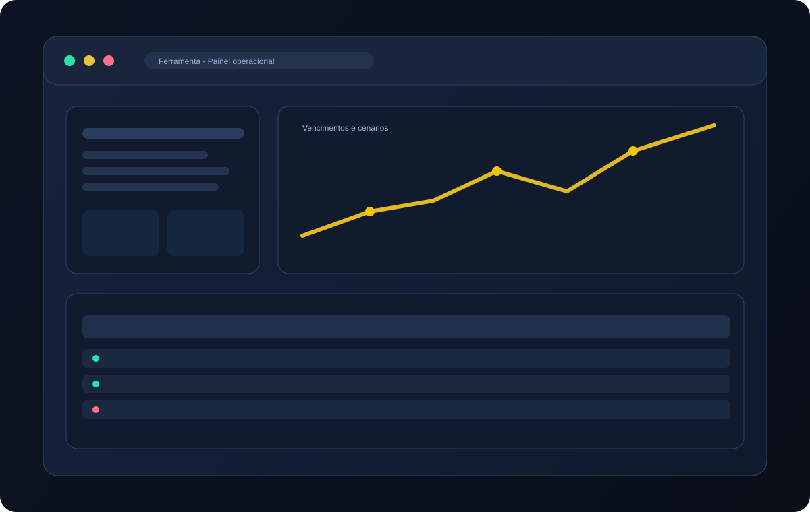
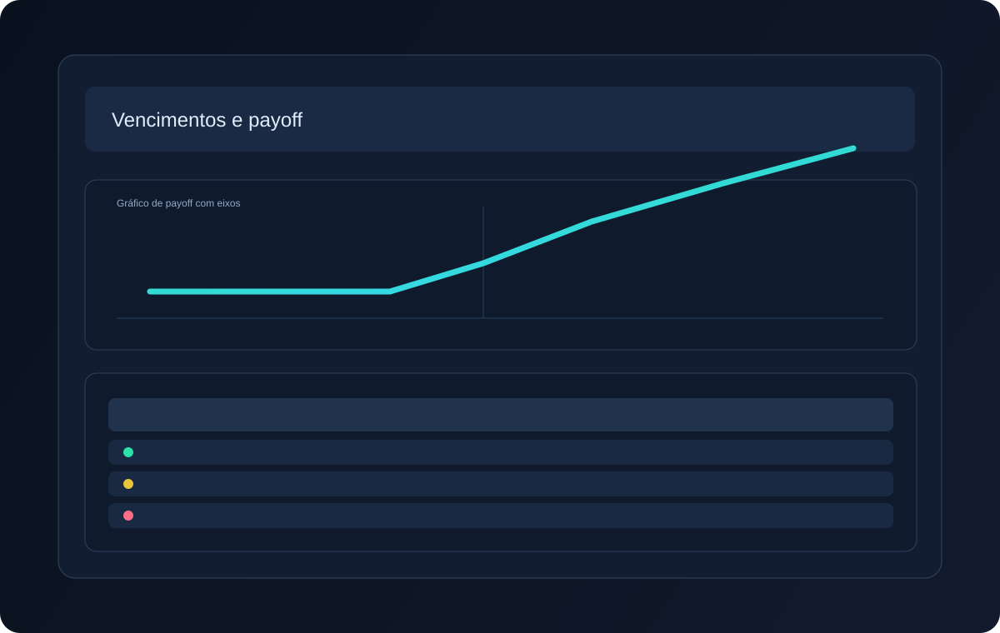
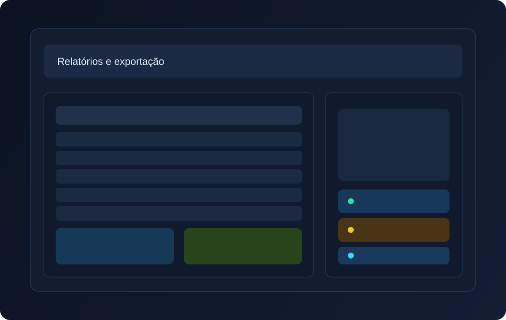

5
módulos de operação
Estruturadas, Bovespa, BMF, Manual e Consolidado.
Download oficial
A Ferramenta consolida operações de Bovespa, BMF e Estruturadas em um fluxo único. O processo cobre leitura de planilhas, vinculação por tags, simulação de cenários e saída final em PDF e Excel.

5
módulos de operação
Estruturadas, Bovespa, BMF, Manual e Consolidado.
4
etapas no fluxo
Importar, validar, analisar cenários e exportar.
2
formatos de saída
Relatórios em PDF e planilhas em Excel.
Como funciona
O processo operacional foi organizado para reduzir retrabalho: cada passo prepara o próximo, com rastreabilidade por ticker, cliente e vencimento.
01
Baixe o instalador oficial para Windows, execute e inicie a aplicação desktop.
02
Carregue arquivos de operações e use validação para inconsistências de estrutura.
03
Vincule cliente, assessor e mesa para consolidação e leitura comercial.
04
Revise payoff e cenários de vencimento e exporte PDF/Excel com o resultado final.
Recursos
Cada módulo foi desenhado para cobrir uma etapa objetiva do processo: entrada de dados, classificação, simulação de cenários e emissão de relatórios.
Importação e consolidação
A tela de importação identifica campos críticos, consolida resultados por módulo e permite revisar problemas antes da gravação final.
Tags e vínculos
As tags mantêm os dados organizados por responsável e carteira, reduzindo duplicidade e facilitando filtros em painéis de acompanhamento.

Vencimentos e cenários
O módulo de vencimento calcula cenários por ativo, strike e barreira para apoiar decisões de rolagem e comunicação com cliente.

Relatórios
Depois da revisão, a ferramenta gera arquivos para distribuição interna e envio ao cliente em formatos prontos para uso.
Requisitos e instalação
Download
Este é o ponto oficial de distribuição do instalador da Ferramenta. O link abaixo aponta para o artefato Latest no storage de atualização.
Baixar para WindowsApós instalar, o aplicativo verifica e aplica atualizações automaticamente.